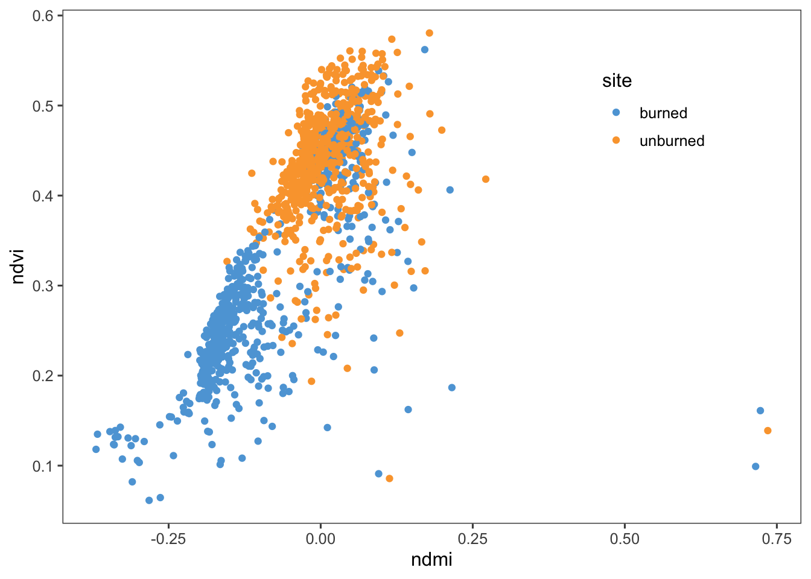
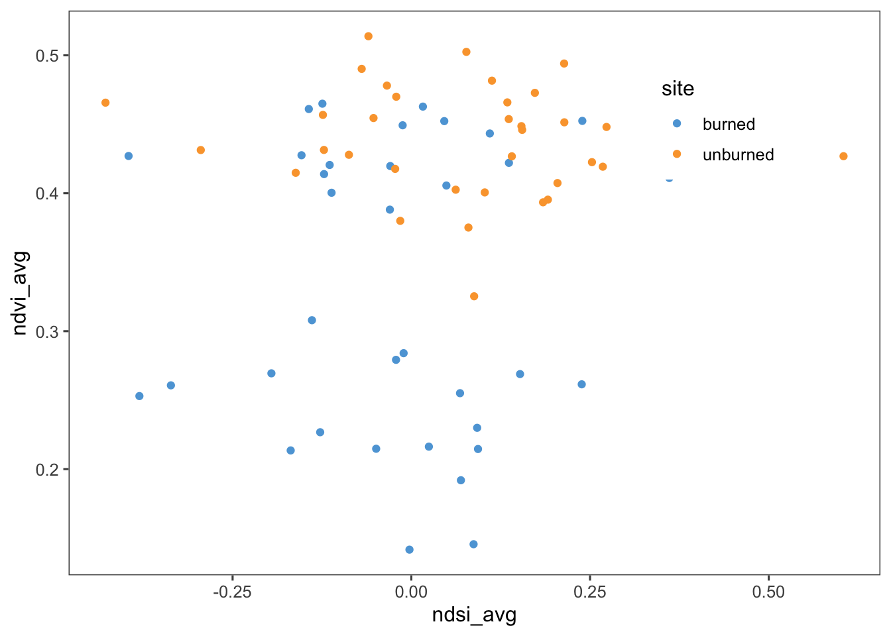
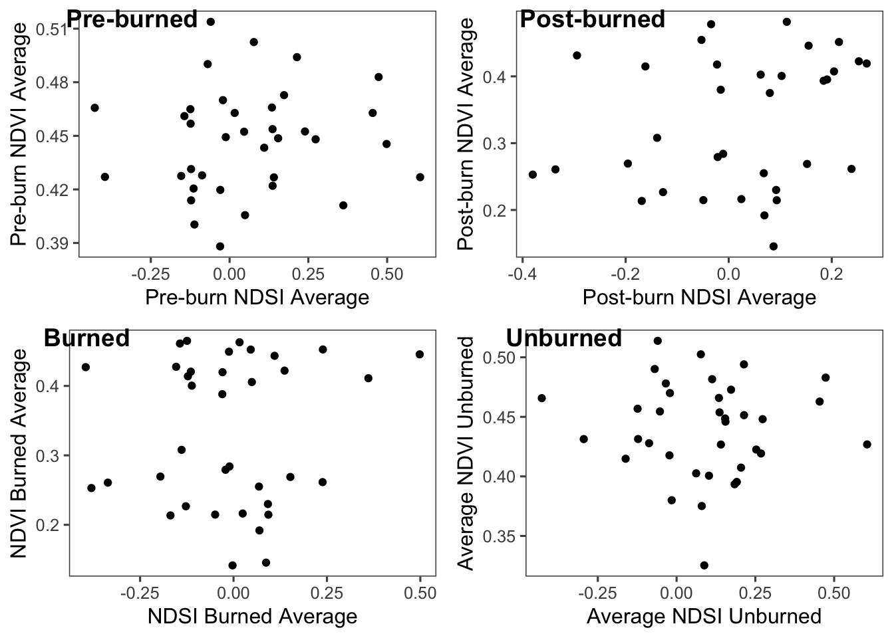
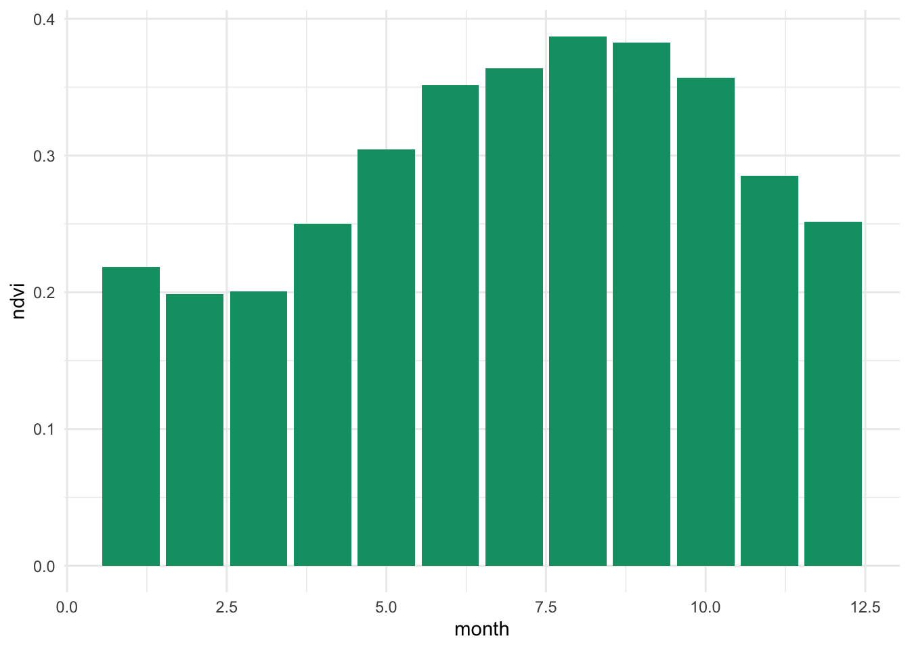
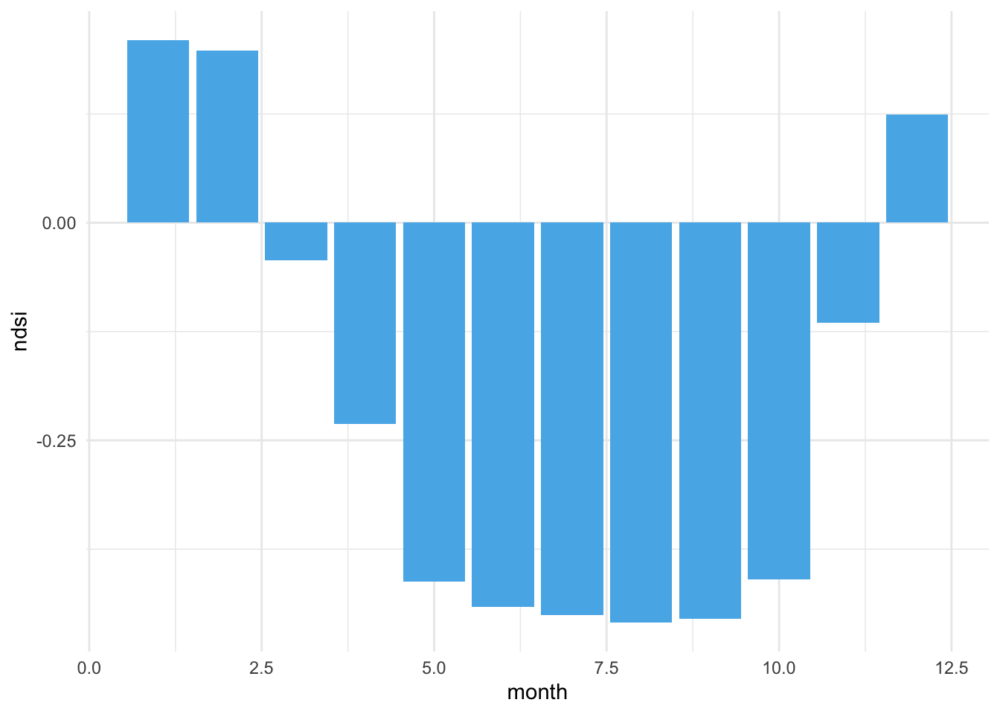

Chapter 1 Hayman Fire Recovery
The Hayman Fire occurred on June 8th, 2002. This was the largest wildfire in Colorado’s history until 2020, burning over 138,000 acres of land. In this assignment, we looked at how the fire affected vegetation growth in the area.
library(tidyverse)
library(tidyr)
library(ggthemes)
library(lubridate)
library(ggpubr)
# Now that we have learned how to munge (manipulate) data
# and plot it, we will work on using these skills in new ways
knitr::opts_knit$set(root.dir='..')1.1 Reading in the Data
####-----Reading in Data and Stacking it ----- ####
#Reading in files
files <- list.files('02-hw-hayman',full.names=T)
#Read in individual data files
ndmi <- read_csv('/Users/maddiebean21/Desktop/School/ESS580A7/bookdown_final/data/02-hw-hayman/hayman_ndmi.csv') %>%
rename(burned=2,unburned=3) %>%
mutate(data='ndmi')
ndsi <- read_csv('/Users/maddiebean21/Desktop/School/ESS580A7/bookdown_final/data/02-hw-hayman/hayman_ndsi.csv') %>%
rename(burned=2,unburned=3) %>%
mutate(data='ndsi')
ndvi <- read_csv('/Users/maddiebean21/Desktop/School/ESS580A7/bookdown_final/data/02-hw-hayman/hayman_ndvi.csv')%>%
rename(burned=2,unburned=3) %>%
mutate(data='ndvi')
# Stack as a tidy dataset
full_long <- rbind(ndvi,ndmi,ndsi) %>%
gather(key='site',value='value',-DateTime,-data) %>%
filter(!is.na(value))1.2 NDVI and NDMI Correlation
In order to find the correlation between NDVI and NDMI, we converted the full_long dataset into a wide dataset using the function “spread” and then made a plot of this function, grouped by unburned vs burned sites. We excluded winter months and focused on summer months because vegetation does not generally grow in the winter.
#changing data into wide
full_wide <- spread(data=full_long,key='data',value='value') %>%
filter_if(is.numeric,all_vars(!is.na(.))) %>%
mutate(month = month(DateTime),
year = year(DateTime))
#filtering summer months
summer_only <- filter(full_wide,month %in% c(6,7,8,9))
#plotting summer months of variables
ggplot(summer_only,aes(x=ndmi,y=ndvi,color=site)) +
geom_point() +
theme_few() +
scale_color_few() +
theme(legend.position=c(0.8,0.8))
There is a strong, positive correlation between NDMI and NDVI.
1.3 Average NDSI and NDVI Correlation
In order to find the correlation between the average NDSI and NDVI, we used the data points for NDSI only during January - April (snow season) and only data points for NDVI during June - August (vegetation growth season). We found that there is a low positive correlation of 0.180 between snow coverage and vegetation. This means that the previous year’s snow cover has little effect on the vegetation growth for the following summer and that this correlation could be from other factors in the environment. Looking at the graph, you can see a difference in correlation between NDVI and NDSI burned and un-burned sites.
#variable ndsi months
var.snow_months <- c(1,2,3,4)
#variable ndvi months
var.growth_months <- c(6,7,8)
#mean NDSI per year
ndsi_avg <- full_wide[c("DateTime", "ndsi", "month", "year", "site")] %>%
filter(month %in% var.snow_months) %>%
group_by(site, year) %>%
summarize(ndsi_avg=mean(ndsi))
#mean NDVI per year
ndvi_avg <- full_wide[c("DateTime", "ndvi", "month", "year", "site")] %>%
filter(month %in% var.growth_months) %>%
group_by(site, year) %>%
summarize(ndvi_avg=mean(ndvi))
#combining NDVI and NDSI into one dataset
combined <- inner_join(ndvi_avg, ndsi_avg)
#correlation
cor(combined$ndvi_avg, combined$ndsi_avg)## [1] 0.1803564ggplot(combined, aes(x=ndsi_avg, y=ndvi_avg, color=site)) +
geom_point() +
theme_few() +
scale_color_few() +
theme(legend.position=c(0.8,0.8))
1.4 Snow Effect Differences
We then looked at the difference of snow effect from the previous correlation between pre- and post-burn and burned and unburned.
#snow effect pre-burn
preburn <- c(1984:2001)
#snow effect post-burn
postburn <- c(2003:2019)
#snow effect average for preburn
ndsi_preburn_avg <- full_wide[c("DateTime", "ndsi", "month", "year", "site")] %>%
filter(month %in% var.snow_months) %>%
filter(year %in% preburn) %>%
group_by(site, year) %>%
summarize(ndsi_preburn_avg=mean(ndsi))
#vegetation effect average for preburn
ndvi_preburn_avg <- full_wide[c("DateTime", "ndvi", "month", "year", "site")] %>%
filter(month %in% var.growth_months) %>%
filter(year %in% preburn) %>%
group_by(site, year) %>%
summarize(ndvi_preburn_avg=mean(ndvi))
#combing preburn ndsi and ndvi into one data set
combine_preburn <- inner_join(ndsi_preburn_avg, ndvi_preburn_avg)
#correlation for preburn
cor(combine_preburn$ndsi_preburn_avg, combine_preburn$ndvi_preburn_avg)## [1] 0.09100615#snow effect average for postburn
ndsi_postburn_avg <- full_wide[c("DateTime", "ndsi", "month", "year", "site")] %>%
filter(month %in% var.snow_months) %>%
filter(year %in% postburn) %>%
group_by(site, year) %>%
summarize(ndsi_postburn_avg=mean(ndsi))
#vegetation effect average for postburn
ndvi_postburn_avg <- full_wide[c("DateTime", "ndvi", "month", "year", "site")] %>%
filter(month %in% var.growth_months) %>%
filter(year %in% postburn) %>%
group_by(site, year) %>%
summarize(ndvi_postburn_avg=mean(ndvi))
#combing postburn ndsi and ndvi into one data set
combine_postburn <- inner_join(ndsi_postburn_avg, ndvi_postburn_avg)
#correlation for postburn
cor(combine_postburn$ndsi_postburn_avg, combine_postburn$ndvi_postburn_avg)## [1] 0.24394#snow effect average for burned
ndsi_burned_avg <- full_wide[c("DateTime", "ndsi", "month", "year", "site")] %>%
filter(month %in% var.snow_months) %>%
filter(site %in% "burned") %>%
group_by(site, year) %>%
summarize(ndsi_burned_avg=mean(ndsi))
#snow effect average for unburned
ndsi_unburned_avg <- full_wide[c("DateTime", "ndsi", "month", "year", "site")] %>%
filter(month %in% var.snow_months) %>%
filter(site %in% "unburned") %>%
group_by(site, year) %>%
summarize(ndsi_unburned_avg=mean(ndsi))
#vegetation effect average for burned
ndvi_burned_avg <- full_wide[c("DateTime", "ndvi", "month", "year", "site")] %>%
filter(month %in% var.growth_months) %>%
filter(site %in% "burned") %>%
group_by(site, year) %>%
summarize(ndvi_burned_avg=mean(ndvi))
#vegetation effect average for unburned
ndvi_unburned_avg <- full_wide[c("DateTime", "ndvi", "month", "year", "site")] %>%
filter(month %in% var.growth_months) %>%
filter(site %in% "unburned") %>%
group_by(site, year) %>%
summarize(ndvi_unburned_avg=mean(ndvi))
#combining data for burned
combined_burned <- inner_join(ndvi_burned_avg, ndsi_burned_avg)
#combining data for unburned
combined_unburned <- inner_join(ndvi_unburned_avg, ndsi_unburned_avg)
#correlation for burned data
cor(combined_burned$ndvi_burned_avg, combined_burned$ndsi_burned_avg)## [1] 0.08700527#correlation for unburned data
cor(combined_unburned$ndvi_unburned_avg, combined_unburned$ndsi_unburned_avg)## [1] -0.03100231#graphing the data
Preburngraph <- ggplot(combine_preburn, aes(x=ndsi_preburn_avg, y=ndvi_preburn_avg)) +
geom_point() +
theme_few() +
scale_color_few() +
labs(x="Pre-burn NDSI Average", y="Pre-burn NDVI Average")
Postburngraph <- ggplot(combine_postburn, aes(x=ndsi_postburn_avg, y=ndvi_postburn_avg)) +
geom_point() +
theme_few() +
scale_color_few()+
labs(x="Post-burn NDSI Average", y = "Post-burn NDVI Average")
Burnedgraph <- ggplot(combined_burned, aes(x=ndsi_burned_avg, y=ndvi_burned_avg)) +
geom_point() +
theme_few() +
scale_color_few()+
labs(x="NDSI Burned Average", y="NDVI Burned Average")
Unburnedgraph <- ggplot(combined_unburned, aes(x=ndsi_unburned_avg, y=ndvi_unburned_avg))+
geom_point() +
theme_few() +
scale_color_few()+
labs(x= "Average NDSI Unburned", y="Average NDVI Unburned")
#Plotting the data in one frame
Plot <- ggarrange(Preburngraph, Postburngraph, Burnedgraph, Unburnedgraph,
labels = c("Pre-burned", "Post-burned", "Burned", "Unburned"),
ncol = 2, nrow = 2)
Plot
For pre-burn snow effect, the correlation is 0.091.
For post-burn snow effect, the correlation is 0.244.
For un-burned snow effect, the correlation is -0.031
For burned snow effect, the correlation is 0.087.
The snow effect from question 2 is a more generalized correlation. While all of these variables have a weak correlation, this question isolates the different variables in the data to help determine the relationship between snow coverage and vegetation growth. The post-burn condition has the strongest correlation between the previous year’s snow coverage and the vegetation growth for the following year. The weakest correlation between snow coverage and vegetation growth was for the un-burned condition. This is interesting because this could potentially mean that the Hayman Fire has pushed the vegetation growth to rely more on snow coverage to get their nutrients. This is still a weak correlation, so more research will need to be conducted to determine if this is true or not; there are many other variables in the environment that could have caused this correlation.
1.5 Average Greenest Month
Here, we looked at which month was the greenest, on average. We discovered that August was the greenest month.
#creating an object for the average vegetation for each month
ndvigreenest <- full_wide[c("DateTime", "ndvi", "month", "year", "site")] %>%
group_by(month) %>%
summarize(ndvi=mean(ndvi))
#Plotting the average vegetation for each month
ggplot(ndvigreenest, aes(x=month, y=ndvi)) +
geom_bar(stat="identity", fill="#009E73") +
theme_minimal()
1.6 Average Snowiest Month
Next, we looked at which month was the snowiest on average. January was the snowiest month.
#creating snow object
ndsisnowiest <- full_wide[c("DateTime", "ndsi", "month", "year", "site")] %>%
group_by(month) %>%
summarize(ndsi=mean(ndsi))
#plotting the snow for each month
ggplot(ndsisnowiest, aes(x=month, y=ndsi)) +
geom_bar(stat="identity", fill="#56B4E9") +
theme_minimal() 